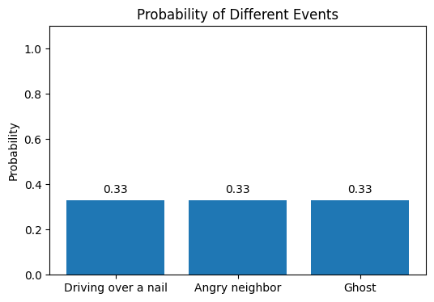
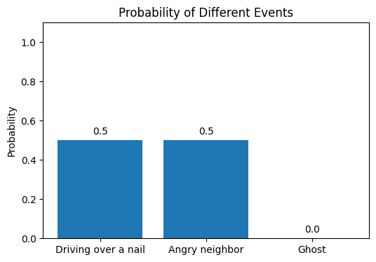
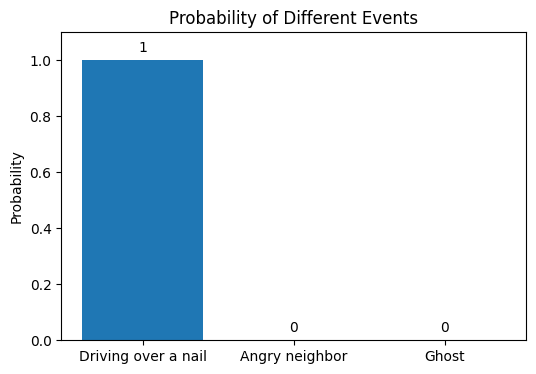

2Mission Briefing: Introduction to Bayesian Statistics
Before we get into the weeds of more complex stuff, we first need to get comfortable with some fundamentals. Understanding Bayesian Statistics is crucial to fully appreciate the inner workings of CausalImpact.
2.1 Unlocking the Codex: What is Bayesian Statistics?
It is a branch of statistics that most closely resembles our own thinking and decision making. It focuses on updating beliefs about the world based on the combination of our prior understanding and the current likelihood of an event occurring. This differs from frequentist statistics, which focuses on the frequency of an event occurring across a large number of repeated trials. Bayesians define probability as a degree of belief.
In the words of John Kruschke, it’s a way to reallocate credibility across. possibilities.
2.2 The Case of the Flat Tire
Imagine you are late for work and see your car has a flat tire. You think there could be 3 ways this would have happened. * You drove over a nail * Your annoying neighbors took a knife to your car * A ghost didn’t want you to get to work today
Initially, you might assume all three options are equally likely and assign equal probabilities to them (33%)
import matplotlib.pyplot as pltimport matplotlib.animation as animationimport numpy as npevents = ['Driving over a nail', 'Angry neighbor', 'Ghost']probabilities = [0.33, 0.33, 0.33]plt.figure(figsize=(6, 4))bars = plt.bar(events, probabilities)plt.ylabel('Probability')plt.title('Probability of Different Events')plt.ylim(0, 1.1) # Probability ranges from 0 to 1# Add labels to the barsfor bar in bars: yval = bar.get_height() plt.text(bar.get_x() + bar.get_width()/2, yval +0.02, round(yval, 2), ha='center', va='bottom')plt.show()

Upon assessing the likelihood of each event happening, you realize the chance of a ghost causing the flat tire is (almost) 0 so you discard that option. You now have a 50:50 chance of Option 1 and Option 2 being the likely cause.
events = ['Driving over a nail', 'Angry neighbor', 'Ghost']probabilities = [0.5, 0.5, 0]plt.figure(figsize=(6, 4))bars = plt.bar(events, probabilities)plt.ylabel('Probability')plt.title('Probability of Different Events')plt.ylim(0, 1.1) # Probability ranges from 0 to 1# Add labels to the barsfor bar in bars: yval = bar.get_height() plt.text(bar.get_x() + bar.get_width()/2, yval +0.02, round(yval, 2), ha='center', va='bottom')plt.show()

You then recall that your neighbors have actually gone to Europe for vacation and have been out for over a week. Given this, the likelihood of them returning just to do this is also (hopefully) 0. Consequently, you reject that option too and can safely conclude that you have probably driven over a nail that has caused this puncture.
events = ['Driving over a nail', 'Angry neighbor', 'Ghost']probabilities = [1, 0, 0]plt.figure(figsize=(6, 4))bars = plt.bar(events, probabilities)plt.ylabel('Probability')plt.title('Probability of Different Events')plt.ylim(0, 1.1) # Probability ranges from 0 to 1# Add labels to the barsfor bar in bars: yval = bar.get_height() plt.text(bar.get_x() + bar.get_width()/2, yval +0.02, round(yval, 2), ha='center', va='bottom')plt.show()

Through this process of elimination, you adjusted your probabilities. Each time you eliminated an option and reallocated probabilities, you created a posterior distribution. This posterior then became the prior for the next round of assessments.
As you can see this is a very intuitive way of thinking and something we do all the time when making decisions. We evaluate the likelihood of multiple events and choose one that’s most likely (often by eliminating the least likely ones).
In the previous example we were able to completely rule out the other options, however, in the real world when there are multiple possible causes we might not be able to fully eliminate an option. The beauty of Bayesian Statistics is that we can collect data and incrementally adjust the credibility of possible trends. The math reveals how much to re-allocate credibility in realistic probabilistic situations 1
This concept is not just theoretical but actively applied in a lot of spheres in our lives. Ever wondered how Gmail or Outlook detect spam emails? These systems use a prior understanding of what defines a spam email and then evaluate the likelihood of an email having such content, resulting in a posterior distribution that decides if it’s spam or not.
2.3 Core Mechanics
Bayesian inference is reallocation of credibility across possibilities. Possibilities that are consistent with the data garner more credibility, while possibilities that are not consistent with the data lose credibility.
Bayesian analysis is the mathematical process of re-allocating credibility in a logically coherent and precise way [1].
2.4 Skill Tree Extensions: Recommended Readings
Chapter 1: Bayesian Statistics the Fun Way book (Will Kurt)
Chapter 1: Bayesian Statistics for Beginners book (Donovan and Mickey)
Chapter 2: Doing Bayesian Data Analysis book (John Kruschke)